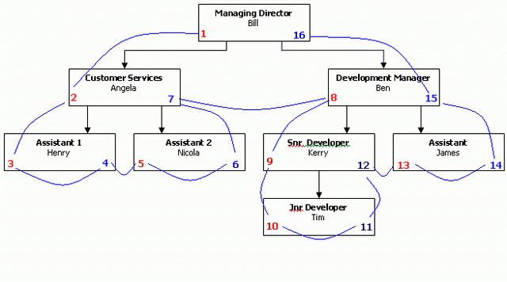
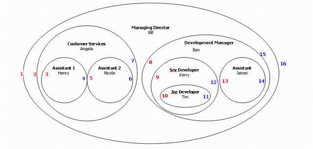

Introduction
This introduction is based on this article, (c) James Simpson.
The nested set model is a particular technique for representing nested sets (also known as trees or hierarchies) in
relational databases. The term was apparently introduced by Joe Celko; others describe the same technique without naming
it or using different terms. (Source: Wikipedia)
A typical example of a tree structure is an organigram of an organisation. We'll be using this to explain how nested sets work.

The above diagram is indicating that each node is aware of all its descendants, and vice versa. For example, we can see easily
enough from the diagram that Ben and Angela are "children" of Bill. We can also see that Tim and James are "children" of Ben.
This ultimately gives us a link between each member of the hierarchy.
For us to represent this we need to store two more values per node, that define the relationship between the nodes of the
tree structure. These are shown on the diagram in blue and red. We call these Left (red values)
and Right (blue values) pointers.
These values are stored on the table, this is all we need to fully represent a nested sets hierarchy.
Those who are into Mathematics know that you can use a different diagram to represent tree structures:

Although this might look confusing at first, and certainly more difficult to read, it is immediately clear why this is called
nested sets, and why this way of storing hierarchical data in a flat table is efficient: you can directly see the relation
between parent and children (all children are contained within their parent), and every node is aware of its parent, and all
its descendants. Using this representation you can clearly see that all pointers line up beautifully. This will come in very
handy when we need to access the tree.
Storing multiple tree structures in a single table
You can store multiple tree structures into a single database table. To make this possible, you can add a tree-id
column to the table. The tree-id identifies the tree the node belongs to.
A tree-id may either be an integer or a string, and it can be auto-generated for you when you create a new tree, in case integers
are used. Integers also make it easier to use the tree-id as a foreign key in a one-to-many relation, and their index lookup
in the database is faster. It's strongly suggested you don't use a string value as a tree-id.
Table structure
You can add as many columns to the table as you want, but to be able to work, the Nestedset Model requires certain
columns to be present:
- Left node pointer, default column name is 'left_id'
- Right node pointer, default column name is 'right_id'
- Tree id, a required column only if the table contains multiple trees (no default)
The actual names of the columns used for these functions can be configured in the model. Altough not strictly needed,
several methods require a "title" or "name" field. The name of this column can be configured in the model as well.
If you use a method that requires it to be present, but you haven't defined it, an exception will be thrown.
This is a minumal stucture for a nested sets table:
CREATE TABLE `tree` (
`id` int(11) unsigned NOT NULL AUTO_INCREMENT,
`left_id` int(11) unsigned NOT NULL,
`right_id` int(11) unsigned NOT NULL,
`tree_id` int(11) unsigned NOT NULL,
`name` varchar(50),
PRIMARY KEY (`id`),
KEY `left_id` (`left_id`), // optional, might speed up certain lookups
KEY `right_id` (`right_id`), // optional, might speed up certain lookups
)
Configuration
The Nestedset Model adds an additional property, $_tree, to the model, with which you can configure the model:
- left_field defines the name of the table column that is used to store the tree's left pointer. The column name defaults to "left_id".
- right_field defines the name of the table column that is used to store the tree's right pointer. The column name defaults to "right_id".
- tree_field defines the name of the table column that is used to store the tree's id, a value that uniquely identifies a tree in case you
want to store multiple trees in a single table. If you use a numeric value as tree-id, the model can automatically assign it when you
create new tree root nodes. If it is not numeric, you have to supply the value before you call save(). There is no default value.
- title_field defines the name of the table column that is used to store the tree node's title or name. It is optional, the
Model works well without it, but it is required for some of the models methods. Where applicable this is mentioned in the documentation
of the method. There is no default value.
The next section show you what a basic Nestedset model looks like, and how you configure it.
Defining the model
Using the nested sets model is as easy as extending \Orm\Model_Nestedset instead of \Orm\Model.
This marks your model as being a nested sets model, adds a lot of methods to manipulate trees and nodes, and changes
the default behaviour of the delete() and save() methods to make sure the tree stays consistent.
<?php
class Model_Tree extends \Orm\Model_Nestedset
{
/**
* @var string name of the table to be used by this model
*/
protected static $_table_name = 'tree';
/**
* @var array array of object properties
*/
protected static $_properties = array(
'id',
'left_id',
'right_id',
'tree_id',
'name',
);
/**
* @var array array with the tree configuration
*/
protected static $_tree = array(
'left_field' => 'left_id', // name of the tree node left index field
'right_field' => 'right_id', // name of the tree node right index field
'tree_field' => 'tree_id', // name of the tree node tree index field
'title_field' => 'name', // name of the tree node title field
);
}
?>
As you can see, a pretty standard ORM model configuration. The only additional class property is $_tree, which defines
the tree configuration. The model is then set up like a normal ORM model, including any relations
or other properties that you wish to use.
Using the model
Based on the example in the introduction and the model defined above, let's start by creating this tree.
<?php
// Bill, our MD, is the root of the tree
$bill = Model_Tree::forge(array('name' => 'Bill'));
// if you save a new node, it will automatically become a tree root node
$bill->save();
// give our MD some subordinates
$angela = Model_Tree::forge(array('name' => 'Angela'));
$ben = Model_Tree::forge(array('name' => 'Ben'));
// they are children of Bill in the tree
$angela->child($bill)->save();
$ben->child($bill)->save();
// add the rest of Customer service
$henry = Model_Tree::forge(array('name' => 'Henry'));
$henry->child($angela)->save();
$nicola = Model_Tree::forge(array('name' => 'Nicola'));
$nicola->child($angela)->save();
// and the development team
$kerry = Model_Tree::forge(array('name' => 'Kerry'));
$kerry->child($ben)->save();
// a sibling of Kerry is a child of Ben too...
$james = Model_Tree::forge(array('name' => 'James'));
$james->sibling($kerry)->save();
// assign the teams benjamin to Kerry
$tim = Model_Tree::forge(array('name' => 'Tim'));
$tim->child($kerry)->save();
?>
As you can see, creating a tree and adding tree nodes is pretty straitforward. One of the main differences between the
Nestedset model and other ORM models, it that is has methods that operate on other model objects. You don't just query
the model, or save an object, you do it in relation to another object in the tree. That doesn't mean you can't use the
traditional methods, Model::find() and Model::query() still work like for any other ORM model.
Let's move on to describing the methods that are available for getting information out of our tree and manupulating the
tree structure.
Behavioral changes
In addition to the primary key, which is read-only in every ORM model object once set, a Nestedset model doesn't allow
you to make changes to the left- and right pointers of the node, and to the tree-id if defined. Attempting to do so, either
via assigment, using a call to set() or by using unset(), will result in a InvalidArgumentException.
save($cascade = null, $use_transaction = false)
The save method works exactly the same as the regular model's implementation.
However, when you use this method on new tree node objects, additional functionality is added to make sure the tree structure
stays consistent. When you call it on an object and you have used one of the collection methods documented below, the
new object is inserted in the tree relative to the object passed to the collection method.
If you haven't used a collection method, save will assume you want to insert a new root node. If the model is
a multi-tree model, it will create a new root with the next available tree-id (if the id is numeric. If not, assign a new
tree-id to the node object yourself).
If a root node can not be created because one already exists, an OutOfBoundsException will be thrown. If
the tree-id is not numeric, and you haven't supplied one manually, the result is unpredicable!
delete($cascade = null, $use_transaction = false)
The delete method works exactly the same as the regular model's implementation.
If the node you delete is not a leaf node (i.e. is has children), all descendants of the node will move one level up in the
tree, they will become descendants of the nodes parent. If you want to delete an entire (subsection of the) tree, use the
delete_tree() method instead.
You can not use the delete() method on a root node if the root node has more then one child node.
Doing so would create an inconsistent tree, as you can't have multiple nodes at the highest level. Trying do to so
will throw a DomainException!
Collection methods
Collection methods are methods that allow you to perform an operation, either a get() or a save(),
on a part of a nestedset tree. Some methods are available for both, some are only relevant for one. For clarity, they are documented
seperately. Using a collection method on an operation that doesn't support it will cause an OutOfBoundsException to
be thrown.
Collection methods for getting nodes
Like with standard ORM models, you can use the get() method to return an array of objects, and the
get_one() method to return a single object. If a collection method is supposed to return a single result,
like for example root(), get() will return an array with that single object. If
a collection method returns multiple objects, like for example children(), get_one()
will return the first object from the result set. It is undetermined which one that will be.
get() and get_one() return null if no result was found.
root()
The root method allows you to get the root of the tree of the object you call this method on.
| Static |
No |
| Parameters |
None.
|
| Returns |
Model_Nestedset, for chaining. |
| Example |
// get the root of the tree $henry belongs to
$root = $henry->root()->get_one();
// echos 'true'
echo $root == $bill ? 'true' : 'false';
// get the root of a specific tree
$root = Model_Tree::forge()->set_tree_id($mytreeid)->root()->get_one();
|
roots()
The roots method allows you to get all the root nodes. If the model is not a multi-tree model,
only the one root node is returned.
| Static |
No |
| Parameters |
None.
|
| Returns |
Model_Nestedset, for chaining. |
| Example |
// get all roots in the tree
$roots = $henry->roots()->get();
// echos 'true' (there's only one root in the tree)
echo reset($roots) == $bill ? 'true' : 'false';
// get alls root without having an existing object
$roots = Model_Tree::forge()->roots()->get();
|
parent()
The parent method allows you to get the parent node of the object you call this method on.
| Static |
No |
| Parameters |
None.
|
| Returns |
Model_Nestedset, for chaining. |
| Example |
// get the parent of $nicola
$parent = $nicola->parent()->get_one();
// echos 'true'
echo $parent == $angela ? 'true' : 'false';
// returns null, it won't work without a node tree context
$parent = Model_Tree::forge()->parent()->get_one();
|
children()
The children method allows you to get all child nodes of the object you call this method on.
Note that this returns only children, no grandchildren. If you are interested in the entire sub-tree, use
the descendants method instead.
| Static |
No |
| Parameters |
None.
|
| Returns |
Model_Nestedset, for chaining. |
| Example |
// get the children of $angela
$children = $angela->children()->get();
// echos 'true'
echo $children == array($henry->id => $henry, $nicola->id => $nicola) ? 'true' : 'false';
// returns null, it won't work without a current node context
$parent = Model_Tree::forge()->children()->get();
|
ancestors()
The ancestors method allows you to get all ancestor nodes of the object you call this method on.
| Static |
No |
| Parameters |
None.
|
| Returns |
Model_Nestedset, for chaining. |
| Example |
// get the ancestors of $henry
$ancestors = $henry->children()->get();
// echos 'true'
echo $ancestors == array($bill->id => $bill, $angela->id => $angela) ? 'true' : 'false';
// returns null, it won't work without a current node context
$parent = Model_Tree::forge()->ancestors()->get();
|
Ancestors are returned in order of their position in the tree, with the root node first.
descendants()
The descendants method allows you to get all descendant nodes of the object you call this method on.
This allows you to fetch an entire sub-tree.The result will NOT include the start node itself.
| Static |
No |
| Parameters |
None.
|
| Returns |
Model_Nestedset, for chaining. |
| Example |
// get the descendants of $ben
$descendants = $ben->descendants()->get();
// echos 'true'
echo $descendants == array($kerry->id => $kerry, $tim->id => $tim, $james->id => $james) ? 'true' : 'false';
// returns null, it won't work without a current node context
$parent = Model_Tree::forge()->descendants()->get();
|
Descendants are returned in order of their position in the tree.
leaf_descendants()
The leaf_descendants method allows you to get leaf descendant nodes of the object you call this method on.
Unlike the descendants method, this method only returns nodes that do not have
children (the leafs of the tree).
| Static |
No |
| Parameters |
None.
|
| Returns |
Model_Nestedset, for chaining. |
| Example |
// get the leaf descendants of $ben
$descendants = $ben->leaf_descendants()->get();
// echos 'true'. Note that $kerry is not returned now, as that has a child object
echo $descendants == array($tim->id => $tim, $james->id => $james) ? 'true' : 'false';
// returns null, it won't work without a current node context
$parent = Model_Tree::forge()->leaf_descendants()->get();
|
Leaf descendants are returned in order of their position in the tree.
siblings()
The siblings method allows you to get all sibling nodes of the object you call this method on.
| Static |
No |
| Parameters |
None.
|
| Returns |
Model_Nestedset, for chaining. |
| Example |
// get the siblings of $kerry
$siblings = $kerry->siblings()->get();
// echos 'true'
echo $siblings == array($kerry->id => $kerry, $james->id => $james) ? 'true' : 'false';
// returns null, it won't work without a current node context
$parent = Model_Tree::forge()->siblings()->get();
|
Siblings are returned in order of their position in the tree. Note that the result set will include the current node!
child()
The child method is an alias for the last_child method.
first_child()
The first_child method allows you to get the first child node of the object you call this method on.
| Static |
No |
| Parameters |
None.
|
| Returns |
Model_Nestedset, for chaining. |
| Example |
// get the first child of $bill
$child = $bill->first_child()->get_one();
// echos 'true'
echo $child == $angela ? 'true' : 'false';
// returns null, it won't work without a current node context
$parent = Model_Tree::forge()->first_child()->get_one();
|
last_child()
The last_child method allows you to get the last child node of the object you call this method on.
| Static |
No |
| Parameters |
None.
|
| Returns |
Model_Nestedset, for chaining. |
| Example |
// get the last child of $bill
$child = $bill->last_child()->get_one();
// echos 'true'
echo $child == $ben ? 'true' : 'false';
// returns null, it won't work without a current node context
$parent = Model_Tree::forge()->last_child()->get_one();
|
sibling()
The sibling method is an alias for the next_sibling method.
previous_sibling()
The previous_sibling method allows you to get the previous_sibling node of the object you call this method on.
| Static |
No |
| Parameters |
None.
|
| Returns |
Model_Nestedset, for chaining. |
| Example |
// get the previous sibling of $nicola
$sibling = $nicola->previous_silbing()->get_one();
// echos 'true'
echo $sibling == $henry ? 'true' : 'false';
// returns null, it won't work without a current node context
$parent = Model_Tree::forge()->previous_sibling()->get_one();
// will return null too, $henry has no previous sibling
$sibling = $henry->previous_silbing()->get_one();
|
next_sibling()
The next_sibling method allows you to get the next sibling node of the object you call this method on.
| Static |
No |
| Parameters |
None.
|
| Returns |
Model_Nestedset, for chaining. |
| Example |
// get the next sibling of $henry
$sibling = $henry->next_silbing()->get_one();
// echos 'true'
echo $sibling == $nicola ? 'true' : 'false';
// returns null, it won't work without a current node context
$parent = Model_Tree::forge()->previous_sibling()->get_one();
// will return null too, $nicola has no previous sibling
$sibling = $nicola->next_silbing()->get_one();
|
path($addroot = true)
The path method returns the path to the current node as a string, using the column identified
by the "title_field" in the models tree configuration.
| Static |
No |
| Parameters |
| Param |
Default |
Description |
| $addpath |
true |
If false, the root node will be excluded from the result. |
|
| Returns |
Model_Nestedset, for chaining. |
| Throws |
OutOfBoundsException, if the model doesn't define a "title_field" column. |
| Example |
// get the path to Tim, returns "Bill/Ben/Kerry/Tim"
$path = $tim->path()->get();
// get the path to Nicola, returns "Bill/Angela/Nicola"
$path = $nicola->path()->get();
// get the path to Kerry, and exclude the boss. returns "Ben/Kerry"
$path = $kerry->path(false)->get();
|
Collection methods for saving nodes
Like with a standard ORM model, save() will either insert the object as a new record in the table,
or it updates an existing record in case the object was retrieved from the database.
However, unlike a standard ORM model in a nestedset tree is is very relevant where exactly in the tree an object
is saved. If you don't specify a collection method before save, saving an existing object will just do that, identical to
normal ORM model behaviour. If you did specify a collection method, the object will be relocated in the tree when you save.
If your saving a new object, not specifing a collection method will create a new root node. If you did specify one, it will
determine where in the tree the new node will be inserted.
child($to = null)
The child method is an alias for the last_child method.
first_child($to = null)
The first_child method tells the model you want to save the object you call this method on
as the first child of the (primary key of the) node object passed.
| Static |
No |
| Parameters |
| Param |
Default |
Description |
| $to |
null |
The node object or the primary key of the node which has to become the parent of the object on which this method is called. |
|
| Returns |
Model_Nestedset, for chaining. |
| Example |
// give bill a new subordinate, before Angela in the tree
$john = Model_Tree::forge(array('name' => 'John'))->first_child($bill)->save();
// promote Kerry to a subordinate of Bill
$kerry->first_child($bill)->save();
|
last_child($to = null)
The last_child method tells the model you want to save the object you call this method on
as the last child of the (primary key of the) node object passed.
| Static |
No |
| Parameters |
| Param |
Default |
Description |
| $to |
null |
The node object or the primary key of the node which has to become the parent of the object on which this method is called. |
|
| Returns |
Model_Nestedset, for chaining. |
| Example |
// give bill a new subordinate, after Ben in the tree
$john = Model_Tree::forge(array('name' => 'John'))->last_child($bill)->save();
// promote Kerry to a subordinate of Bill
$kerry->last_child($bill)->save();
|
From a hierarchy perspective, first_child and last_child do the same. Only the
exact position in the tree, the relation to its siblings after the insert or relocation of the node, is different.
sibling($to = null)
The sibling method is an alias for the next_sibling method.
previous_sibling($to = null)
The previous_sibling method tells the model you want to save the object you call this method on
as the previous sibling of the (primary key of the) node object passed (just before the passed object, on the same level in the tree).
| Static |
No |
| Parameters |
| Param |
Default |
Description |
| $to |
null |
The node object or the primary key of the node which has to become the next sibling of the object on which this method is called. |
|
| Returns |
Model_Nestedset, for chaining. |
| Example |
// give bill a new subordinate, before Angela in the tree
$john = Model_Tree::forge(array('name' => 'John'))->previous_sibling($angela)->save();
// demote James to be a subordinate of Ben, besides Tim
$james->previous_sibling($tim)->save();
|
next_sibling($to = null)
The next_sibling method tells the model you want to save the object you call this method on
as the next sibling of the (primary key of the) node object passed (just after the passed object, on the same level in the tree).
| Static |
No |
| Parameters |
| Param |
Default |
Description |
| $to |
null |
The node object or the primary key of the node which has to become the previous sibling of the object on which this method is called. |
|
| Returns |
Model_Nestedset, for chaining. |
| Example |
// give bill a new subordinate, after Angela in the tree
$john = Model_Tree::forge(array('name' => 'John'))->next_sibling($angela)->save();
// demote James to be a subordinate of Ben, besides Tim
$james->next_sibling($tim)->save();
|
Test methods
Test methods are used to query a particular state of the object with regards to their position in the tree.
is_root()
The is_root method tells you if the object you're calling it on is a root node or not.
| Static |
No |
| Parameters |
None.
|
| Returns |
Bool, true if the object is a root node, false if not |
| Example |
// is Bill a root node? echo's 'true'
echo $bill->is_root() ? 'true' : 'false';
// is Tim a root node? echo's 'false'
echo $tim->is_root() ? 'true' : 'false';
|
is_leaf()
The is_leaf method tells you if the object you're calling it on is a leaf, i.e. that is doesn't have child nodes.
| Static |
No |
| Parameters |
None.
|
| Returns |
Bool, true if the object is a leaf node, false if not |
| Example |
// is Tim a leaf node? echo's 'true'
echo $tim->is_leaf() ? 'true' : 'false';
// is Angela a leaf node? echo's 'false'
echo $angela->is_leaf() ? 'true' : 'false';
|
is_child()
The is_child method tells you if the object you're calling it on is a child node, i.e. that is has
a parent node. This is the reverse of is_root(), as all non-root nodes have a parent.
| Static |
No |
| Parameters |
None.
|
| Returns |
Bool, true if the object is a child node, false if not |
| Example |
// is Henry a root node? echo's 'true'
echo $henry->is_child() ? 'true' : 'false';
// is Bill a root node? echo's 'false'
echo $bill->is_child() ? 'true' : 'false';
|
is_child_of(Model_Nestedset $to = null)
The is_child_of method allows you to check if the object you call this method on
is a child node (a direct descendant) of the node object passed.
| Static |
No |
| Parameters |
| Param |
Default |
Description |
| $to |
null |
The node which you want to check against. |
|
| Returns |
Bool, true if the object is a child node of the node passed, false if not |
| Example |
// is Ben a child node of Bill? echo's 'true'
echo $ben->is_child_of($bill) ? 'true' : 'false';
// is James a child node of Bill? echo's 'false', as it's a grandchild
echo $james->is_child_of($bill) ? 'true' : 'false';
// is Nicola a child node of Ben? echo's 'false', different part of the tree
echo $nicola->is_child_of($ben) ? 'true' : 'false';
|
is_descendant_of(Model_Nestedset $to = null)
The is_descendant_of method allows you to check if the object you call this method on
is a descendant node of the node object passed.
| Static |
No |
| Parameters |
| Param |
Default |
Description |
| $to |
null |
The node which you want to check against. |
|
| Returns |
Bool, true if the object is a descendant node of the node passed, false if not |
| Example |
// is Ben a descendant node of Bill? echo's 'true'
echo $ben->is_descendant_of($bill) ? 'true' : 'false';
// is James a descendant node of Bill? echo's 'true', as it's a grandchild
echo $james->is_descendant_of($bill) ? 'true' : 'false';
// is Nicola a descendant node of Ben? echo's 'false', different part of the tree
echo $nicola->is_descendant_of($ben) ? 'true' : 'false';
|
is_parent_of(Model_Nestedset $to = null)
The is_parent_of method allows you to check if the object you call this method on
is the parent node of the node object passed.
| Static |
No |
| Parameters |
| Param |
Default |
Description |
| $to |
null |
The node which you want to check against. |
|
| Returns |
Bool, true if the object is the parent node of the node passed, false if not |
| Example |
// is Bill the parent of Ben? echo's 'true'
echo $bill->is_parent_of($ben) ? 'true' : 'false';
// is Bill the parent of James? echo's 'false', as it's a grandparent
echo $bill->is_parent_of($james) ? 'true' : 'false';
|
is_ancestor_of(Model_Nestedset $to = null)
The is_ancestor_of method allows you to check if the object you call this method on
is a ancestor of the node object passed.
| Static |
No |
| Parameters |
| Param |
Default |
Description |
| $to |
null |
The node which you want to check against. |
|
| Returns |
Bool, true if the object is an ancestor of the node passed, false if not |
| Example |
// is Bill an ancestor of Ben? echo's 'true'
echo $bill->is_ancestor_of($ben) ? 'true' : 'false';
// is Bill an ancestor of James? echo's 'true', as it's a grandparent
echo $bill->is_ancestor_of($james) ? 'true' : 'false';
|
is_same_model_as(Model_Nestedset $to = null)
This method is mainly used internally to avoid operations across two different Nestedset models.
is_same_tree_as(Model_Nestedset $to = null)
This method is mainly used internally to avoid operations across two different Nestedset models.
It not only checks if both objects are instances of the same model, but also if both instances belong
to the same tree in a multi-tree model.
has_parent()
The has_parent method is an alias for the is_child method.
has_children()
The has_children method is the reverse of the is_leaf method.
If an object is not a leaf, it implies it has child nodes.
has_previous_sibling()
The has_previous_sibling method tells you if the object you're calling it on has a previous sibling.
| Static |
No |
| Parameters |
None.
|
| Returns |
Bool, true if the object has a previous sibling, false if not |
| Example |
// Does James have a previous sibling? echo's 'true'
echo $james->has_previous_sibling() ? 'true' : 'false';
// Does Tim have a previous sibling? echo's 'false'
echo $tim->has_previous_sibling() ? 'true' : 'false';
|
has_next_sibling()
The has_next_sibling method tells you if the object you're calling it on has a next sibling.
| Static |
No |
| Parameters |
None.
|
| Returns |
Bool, true if the object has a next sibling, false if not |
| Example |
// Does Henry have a next sibling? echo's 'true'
echo $henry->has_next_sibling() ? 'true' : 'false';
// Does Ben have a next sibling? echo's 'false'
echo $ben->has_next_sibling() ? 'true' : 'false';
|
Miscellaneous methods
delete_tree($cascade = null, $use_transaction = false)
The delete_tree works identical to the delete() method, which the difference that
this method DOES delete all children as well.
If you use the delete_tree() method on a root node, the entire tree will be deleted!
tree_config($name = null)
You use this method to get one or all tree configuration options of the model. It is mainly used internally
to construct queries that operate on parts of the tree, or on a specific tree in a multi-tree model.
| Static |
Yes |
| Parameters |
| Param |
Default |
Description |
| $name |
null |
The name of the configuration property to return. |
|
| Returns |
A configuration value, an array of values, or null if the requested value does not exist. |
| Example |
// get the name of the tree-id column
$tree_id = Model_Tree::tree_config('tree_id');
|
get_tree_id()
You use this method to get the tree-id in a multi-tree environment. If there is a valid node to operate on, the
tree-id of that node is returned. If not, the value set using set_tree_id() is returned.
If no tree-id has been set, an exception is thrown. This method is mainly used internally to make sure queries
run in the context of the current tree in a multi-tree environment.
| Static |
No |
| Parameters |
None.
|
| Returns |
mixed, the tree-id of the current tree, or the default tree-id set. |
| Example |
// get the tree_id (returns 1)
$current_tree = $bill->get_tree_id();
|
set_tree_id($tree = null)
You use this method to set the tree-id in a multi-tree environment. You mainly use this when you want to
run a get() or get_one() but you don't have an existing node to work on.
| Static |
No |
| Parameters |
| Param |
Default |
Description |
| $tree |
null |
The tree-id of the tree to select. If no value, or null, is passed, the stored tree-id is reset. |
|
| Returns |
Model_Nestedset, for chaining. |
| Example |
// get the root of a tree without having a previous node to work with
$root = Model_Tree::forge()->set_tree_id($mytreeid)->get_one();
|
build_query()
The build_query method returns an ORM query object, like Model_Nestedset::query()
but with an added where clause in case of a multi-tree model, to make sure the query runs in the context of the
current tree. It requires a tree-id to be available, so if you call this on a new object, use set_tree_id to make
sure a valid id is defined.
| Static |
No |
| Parameters |
None.
|
| Returns |
an ORM Query object. |
| Example |
// get all nodes in the current tree with an enabled status set
$enabled = Model_Tree::forge()
->set_tree_id($mytreeid)
->build_query()
->where('enabled', '=', 1)
->get();
// using an existing object, this will use the tree-id of the $bill object
$enabled = $bill
->build_query()
->where('enabled', '=', 1)
->get();
|
get_query()
The get_query method returns an ORM query object, but unlike build_query()
this method requires a collection methods to be used. It allows you to use the standard Model methods to
constuct a first selection of nodes, and use the returned Query object to fine-tune the query.
| Static |
No |
| Parameters |
None.
|
| Returns |
an ORM Query object. |
| Example |
// get all child nodes of Bill with an enabled status set
$enabled = $bill
->children()
->get_query()
->where('enabled', '=', 1)
->get();
|
count_children()
The count_children method returns the number of children (direct descendants) of the object you're calling it on.
| Static |
No |
| Parameters |
None.
|
| Returns |
Integer |
| Example |
// Get the number of Bill's children, echo's 2
echo $bill->count_children();
// Get the number of Kerry's children, echo's 1
echo $kerry->count_children();
// Get the number of Tim's children, echo's 0
echo $tim->count_children();
// echo's 0 too, a new object can't have children
echo Model_Tree::forge()->count_children();
|
count_descendants()
The count_descendants method returns the number of descendants of the object you're calling it on.
| Static |
No |
| Parameters |
None.
|
| Returns |
Integer |
| Example |
// Get the number of Bill's descendants, echo's 7
echo $bill->count_descendants();
// Get the number of Ben's children, echo's 3
echo $ben->count_descendants();
// echo's 0, a new object can't have descendants
echo Model_Tree::forge()->count_descendants();
|
depth()
The depth method returns the depth or level the current node is in the tree, where
the level of the root node is 0.
| Static |
No |
| Parameters |
None.
|
| Returns |
Mixed, integer or false if the current object is not valid |
| Example |
// Get the level of Bill in the organisation
echo $bill->depth(); // echo's 0, he's top dog!
// Get the level of Angela in the organisation
echo $angela->depth(); // echo's 1, as she's an N+1
// Get the level of Tim in the organisation
echo $tim->depth(); // echo's 3, as low as you can go...
// returns false, you can't get the depth of a new node
$result = Model_Tree::forge()->depth();
|
dump_tree($as_object = false, $children = 'children', $path = 'path')
The dump_tree method returns the entire tree, using the current object as root node
into a multi-dimensional array.
| Static |
No |
| Parameters |
| Param |
Default |
Description |
| $as_object |
false |
If true, it will return a hierarchical tree of objects instead of a multi-dimensional array. |
| $children |
'children' |
data for child nodes will be added to a property or array key with this name. |
| $path |
'path' |
a property by this name is created and will contain the path to the node, starting at the root.
This requires the 'title_field' to be configured!
|
|
| Returns |
Mixed, multi-dimensional array, or the current object, with added children. |
| Example |
// returns a multi-dimensional array. $tree['children'] will contain the children of Bill
$tree = $bill->dump_tree();
// returns the 'bill' object with a property 'children' containing the children of Bill
$tree = $bill->dump_tree(true);
// using $tree, this returns array($angela, $ben)
$children = $tree->children;
// and this returns array($henry, $nicola), the children of $angela
$grandchildren = reset($children)->children;
// ORM objects are always used by reference!
$bill->dump_tree(true);
// so this works fine too...
$children = $bill->children;
|
As with all ORM array's, the table's primary key is used as array index. Note that because the ORM uses objects by
reference from a single cache, if you choose to use 'as_object', children will be added to existing objects too.
The related method allows you to fetch related objects when executing a nested set command, indentical
to a normal Orm model query.
| Static |
No |
| Parameters |
| Param |
Default |
Description |
| $related |
required |
The name of the relation to include. |
| $conditions |
array() |
Any conditions you want to pass on when fetching the related objects. |
|
| Returns |
Model_Nestedset, for chaining. |
| Example |
// include related 'child' objects in the result
$tree = $bill->related('child')->dump_tree();
// get the descendants of $ben
$descendants = $ben->descendants()->related('child')->get();
// This will NOT include the child relation!
$descendants = $ben->related('child')->descendants()->get();
|
If you want to use this method on any nested set operation (like for example decendants()), make sure to setup that
operation first. If you don't, your included relations will be reset my the nested set operation method call!